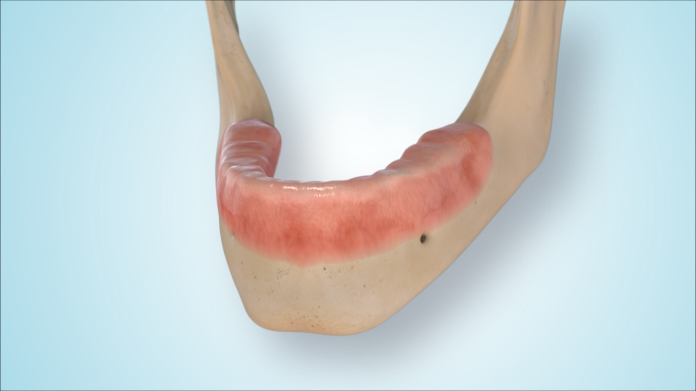
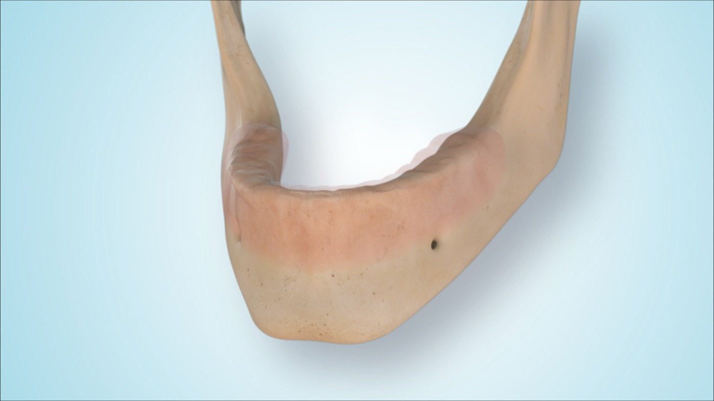
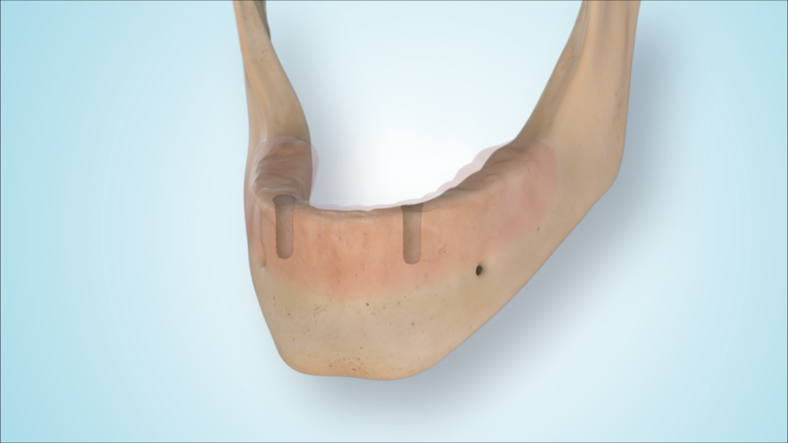
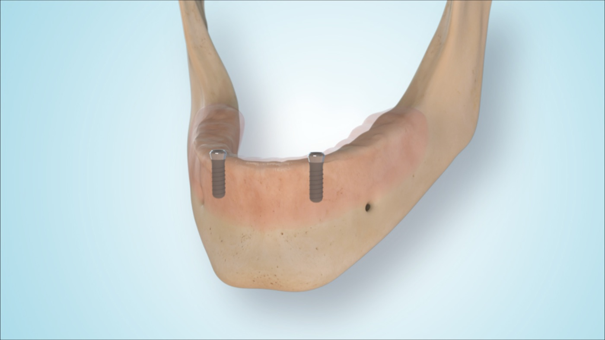
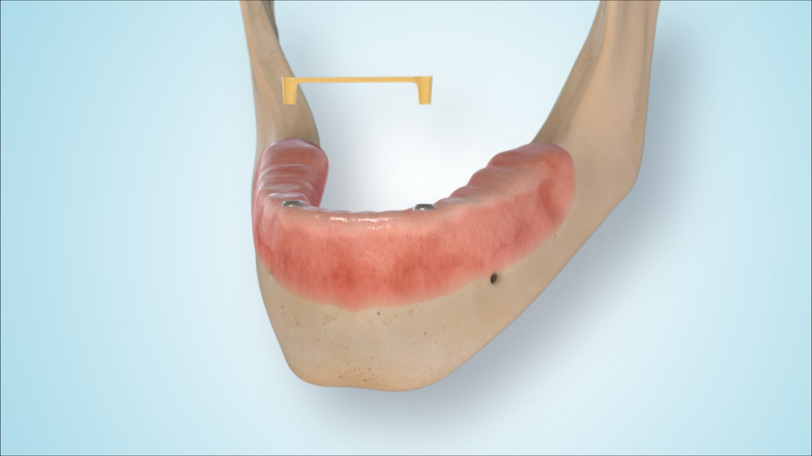
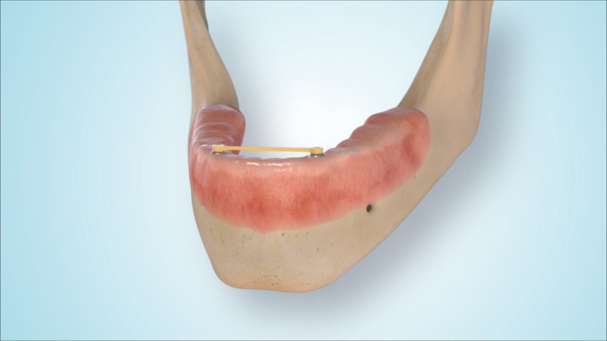
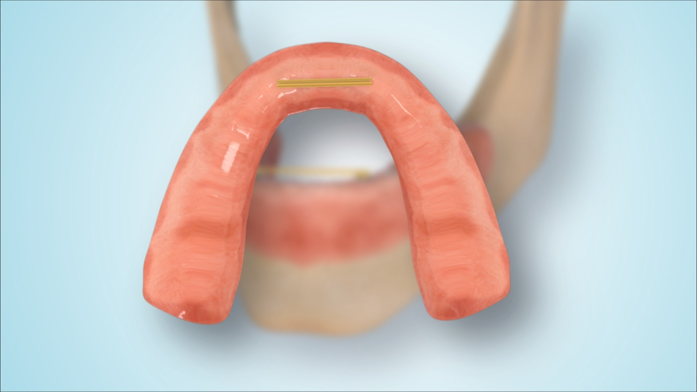
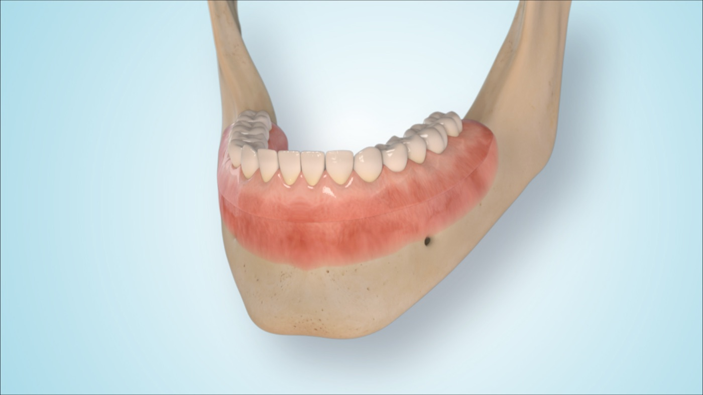

MKG im Carree
Example images · edentulous lower jaw
2 implants · bar overdenture
Example digital visualisation of a lower jaw restoration with 2 implants and a bar. The bar can stabilise the removable denture and distribute load between the implants. Whether a bar, locator/snap attachment or another attachment concept is suitable depends on denture design, available space, cleaning ability, patient handling and cost framework.







